Minecraft Beta 1.9 Prerelease 2
New things since last version:


Blocks in this Version:
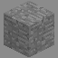
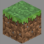
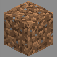
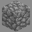
 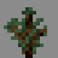
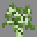
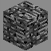
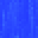
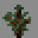
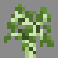
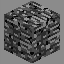
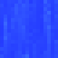
 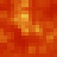
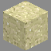
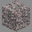
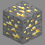
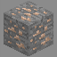
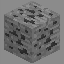
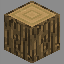
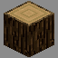
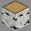
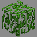
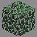
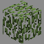
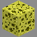
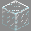
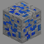
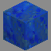
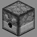
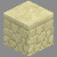
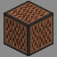
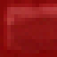
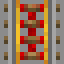
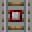
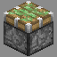
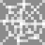
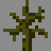
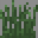
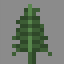
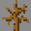
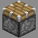
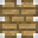
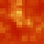
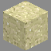
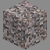
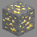
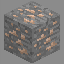
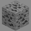
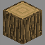
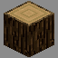
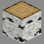
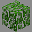
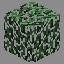
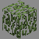
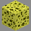
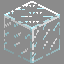
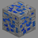
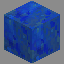
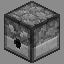
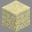
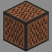
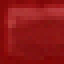
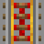
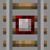
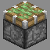
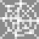
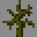
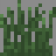
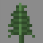
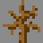
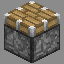
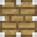


Items in this Version:


Mobs in this Version:
Creeper (Can be charged by lightning), Skeleton, Zombie, Spider, Giant, Slime, Ghast, Zombie Pigman, Endermen, Cave Spiders, Silverfish, Blaze, Magma Cube
Pig (lightning turns into zombie pigman), Sheep (Dyeable), Cow, Chicken, Squid, Wolf, Mooshroom, Snow Golem, Villager
Features in this Version:
Removed Features:
Jumping to get EXP.
TESTIFICATE above villager heads.
Other Information:
There are a lot of possible potion combinations, too many to really cover especially since they're not even accessible without hacking.
Since there are potions, there are also different colours and they appear to be determined somehow. Some are Red, some are Green, some are Yellow, etc..